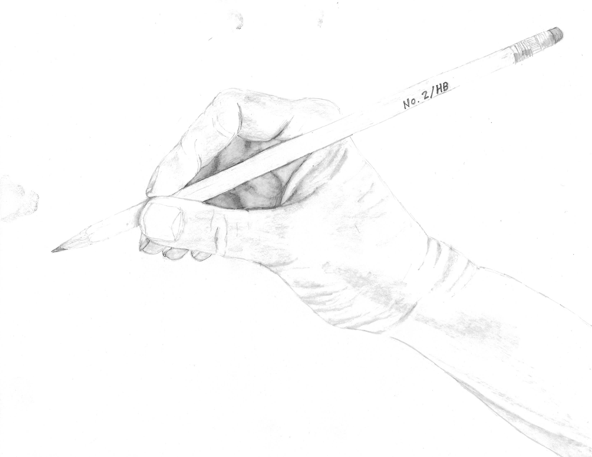

Once upon a time there was a lady. She had experienced some of the most wonderful joys in life that you could imagine. She was a mother of five children and a wife to a wonderful husband.
One day when most of the kids were grown she decided to try something new. She took a drawing class and tried to create something with graphite and paper. Her family was surprised that her first drawing actually looked like a hand. In another assignment the bodies of the mermaid, clown and robot, to their delightment, were recognizable. Not having used much artistic ability in her life the woman found that she enjoyed creating drawings.
She soon took on more classes that stretch her abilities and imagination and although at times she doubts that she has what it takes, she continues forward hoping to always learn new things and maybe someday she will be an artist.
